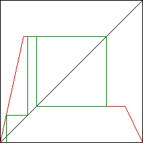

| 8. This function does not exhibit chaotic behavior because it is predictable: regardless of the starting point (except for 0 and 1, both of which iterate to 0), all iterates eventually fall into the 2-cycle pictured in this graphical iteration path. |
|  |
Return to Homework 8 Practice.